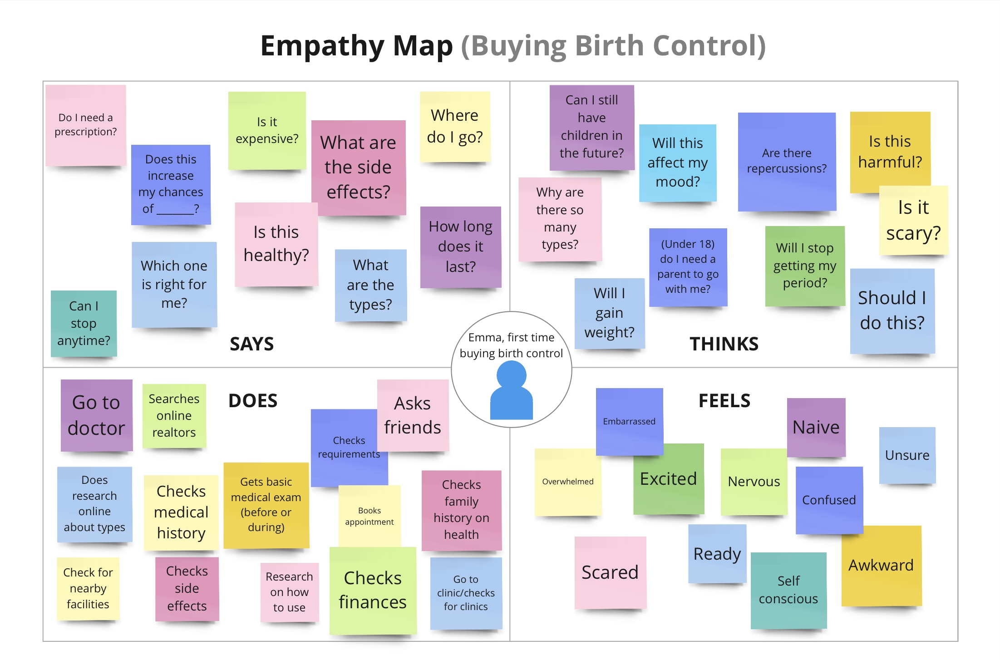
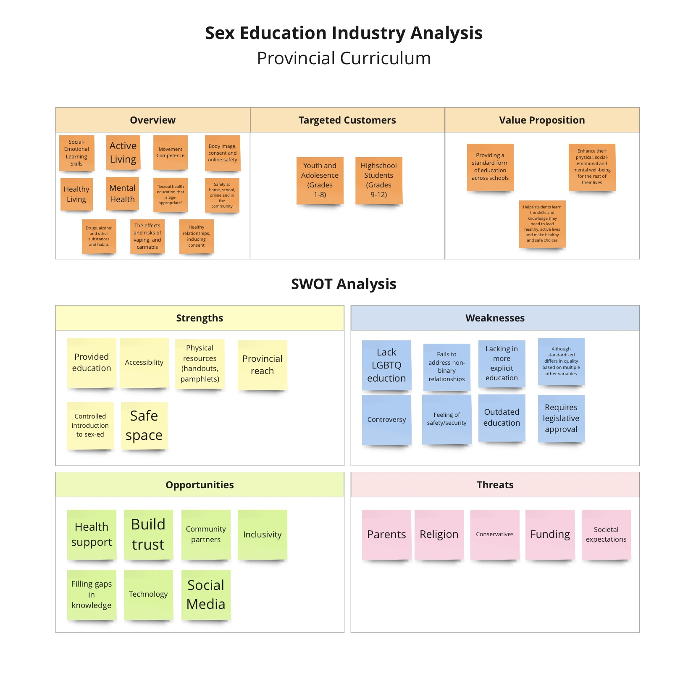
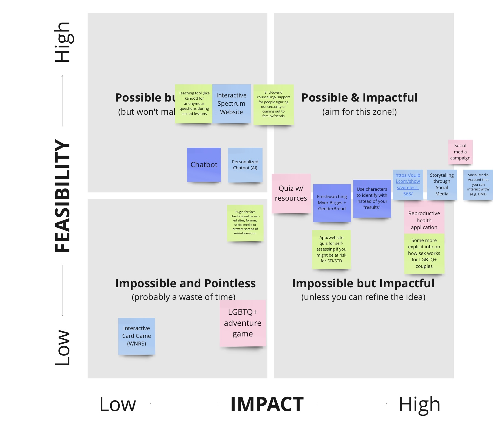
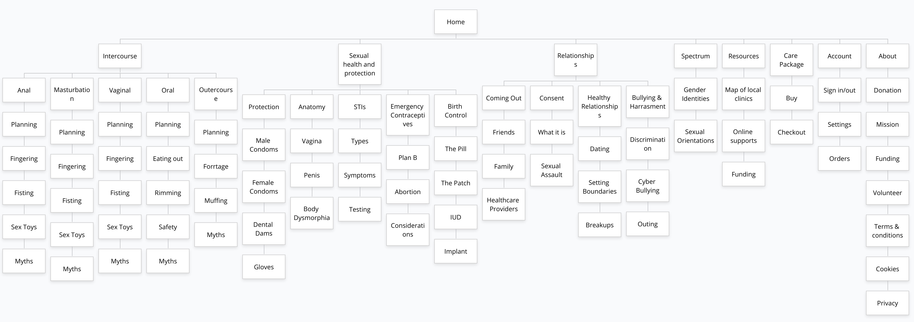
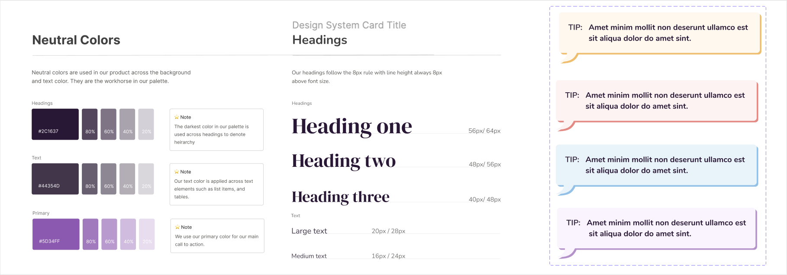

Year
2020
Role
Product designer
deliverables
user research
Ux/Ui design
hi-fidelity mockup
tools
Photoshop
Illustrator
Figma
Miro
Medley was created as our capstone project for the RSA student design competition. To tackle the brief and solve the problem of “How might we design systems that provide seamless and cost-effective access to quality health services for underserved communities?”, my group chose to address the lack of LGBTQ+ sex education in Canada.
The right to comprehensive sexuality education is recognized in international human rights treaties, yet even in first-world countries like Canada, the lack of comprehensive sex-ed is astonishing. Teaching proper sexual education can be a proactive way to address and prevent root causes of negative health problems. For LGBTQ+ youth, this lack of education is even more concerning. In 2015, only 12% of students surveyed said they learned about same-sex education.
For many of these youth, existing solutions aren’t enough. Sex-ed taught in school curriculums mainly focus on heteronormative sex, if even that, and many online resources aren’t reliable. Social media and pornography have been the main ways that many youth learn about sex-ed and the amount of misinformation can cause these LGBTQ+ youth to be even more confused.
My group created a survey in order to properly assess the problem surrounding sexual education. Using this data, we created user persona’s of the audience we wanted to solve this problem for. LBGTQ+ youth already face many problems in society and our hope was to make the lives for these youth just a bit easier.
In order to properly tackle the brief, my group started off by setting our long-term goal, “to provide accessible sexual health services to the LGBTQ+ in order to increase inclusive education”. Using how-might-we statements, we narrowed down our target problems to solve.
In addition, we also started to pick what kinds of solutions we wanted for our brief. Using a method called crazy 8s, each of our group members had an 8 minute timer to come up with as many ideas as possible. We then came together with all of our ideas and discussed how each one would potentially work.
From our crazy 8 ideas, we started to group similar ones into the same category. Using an innovation matrix, we looked at the feasibility of each idea and how effective it would be in real world situations. Not only did we want a cool idea that could solve the brief, we wanted an idea that would actually make a positive impact within the LGBTQ+ community and more importantly, be useful in teaching LGBTQ+ youth comprehensive sexual education. My ideas were showcased on the pink sticky notes. Generally they were high on impact but only with further refinement would the idea be completely feasibile.
With our idea set, we started to map out our idea. Our first step was creating a sitemap to lay out the topic we wanted to cover as well as to make sure our website had a proper hierarchy. We listed out all the topics that we would want our final product to have and then started working on wireframes.
Our first iteration of wireframes included creating a mood board for the aesthetic that we were going for. We wanted the site to be fun, colourful, and interactive so that’s what we focused on for the wireframes. We picked out components we liked from each person's wireframes and started medium-fidelity wireframes on figma.
Using a design system, we made components for each aspect of our website in order to easily change them later after testing. Each group member was in charge of a different part of the project and my role was creating and prototyping the intercourse and protection sections. This included checking over the copy, creating the layouts, and finalizing the sections. I also branched into other group members sections when they needed help.
To make sure that our product was actually helpful to people within the LGBTQ+ community, we sought out a few participants who were willing to test out our prototype. We walked them through tasks and asked them to speak out their thoughts in order to understand a customer’s journey using our website. Through testing our product with people within the community, we changed up our components, including our navigation bar which gave a lot of people trouble.
With the comments from our testers, we were ready to prototype again. Their feedback gave us valuable insight on what needed to be added, taken away, and overall changed in order to best hit the pain points of our audience. By taking all the comments into account, we were able to make the project both playful and informative.
With the time constraint of this project, we were not able to prototype out all the pages that we wanted to. I really loved this project and the real world social impact it provided and so it was disappointing we were not able to finish. For the future, I definitely think that I need to learn how to create a proper design system. While ours was useful, the amount of time spent creating new components far exceeded the time it should have taken. Another point that made this project difficult was the lack of LGBTQ+ members within our group members. While we did a lot of research in order to tackle the problem, being in the community itself truly showcases the struggles that they go through. I hope that our project sparks potential for a change in curriculum or companies that provide services to the LGBTQ+ community.